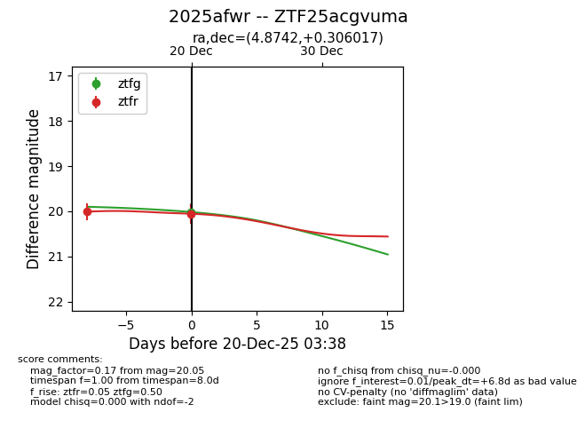
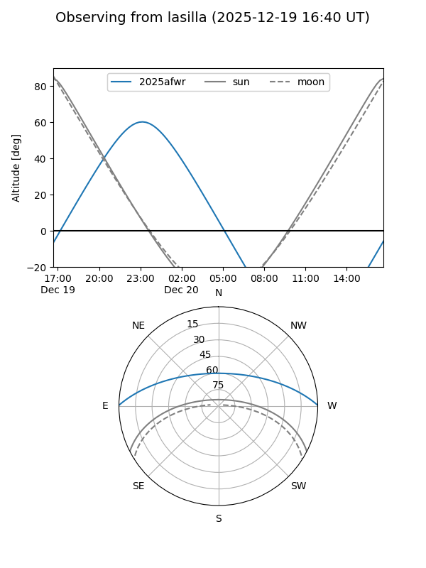
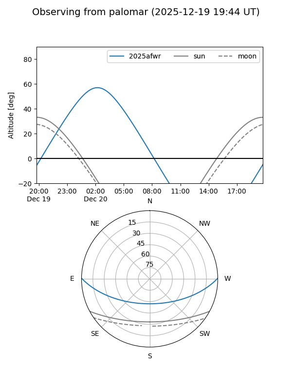
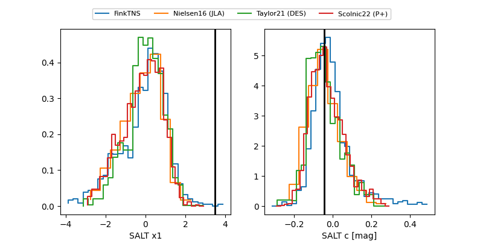

2025afwr
Target 2025afwr at 2025-12-22 14:03
Aliases and brokers:
FINK: fink-portal.org/ZTF25acgvuma
Lasair: lasair-ztf.lsst.ac.uk/objects/ZTF25acgvuma
ALeRCE: alerce.online/object/ZTF25acgvuma
TNS: wis-tns.org/object/2025afwr
YSE: ziggy.ucolick.org/yse/transient_detail/2025afwr
alt names
ZTF25acgvuma (ztf,fink_ztf)
2025afwr (tns,yse)
Coordinates:
equatorial (ra, dec) = 4.8742,+0.30602
equatorial (HMS+DMS) = 00:19:29.80,+00:18:21.66
galactic (l, b) = (105.9997,-61.51122)
Flags:
Photometry:
last ztfg=20.02, ztfr=20.05
1 ztfg, 2 ztfr detections
Lightcurve

Visibility


Additional plots
